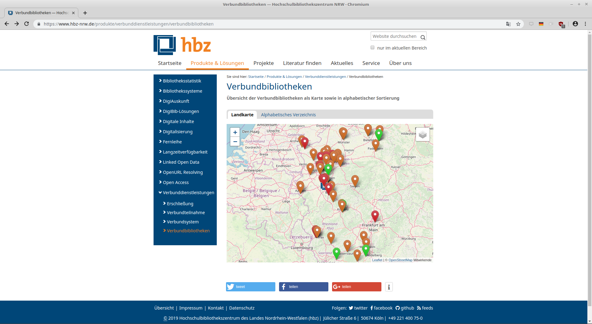
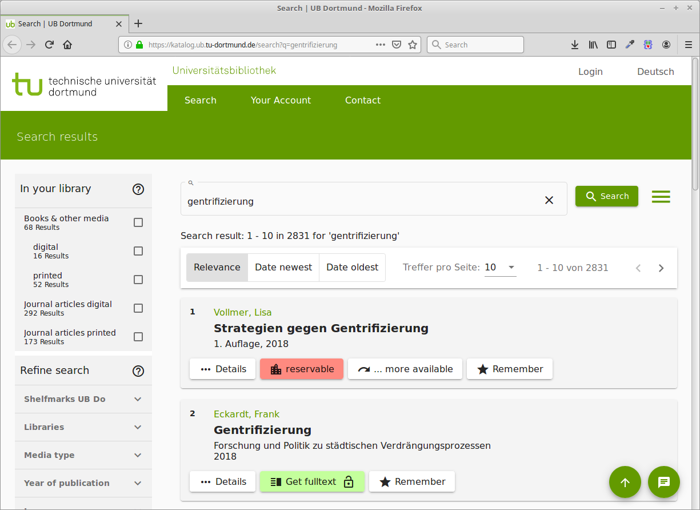
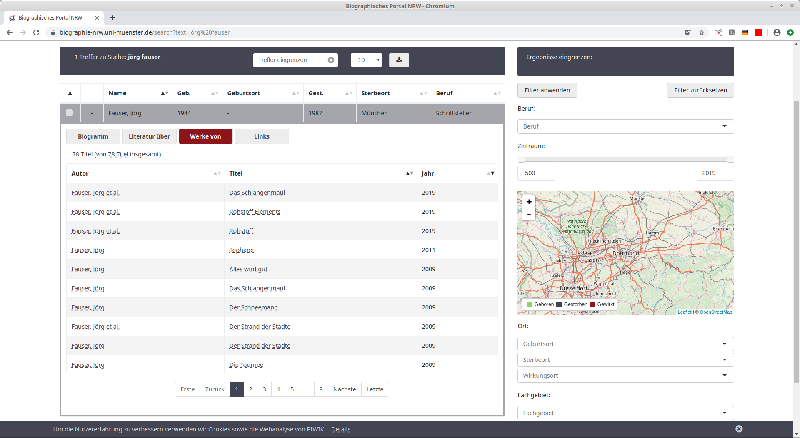
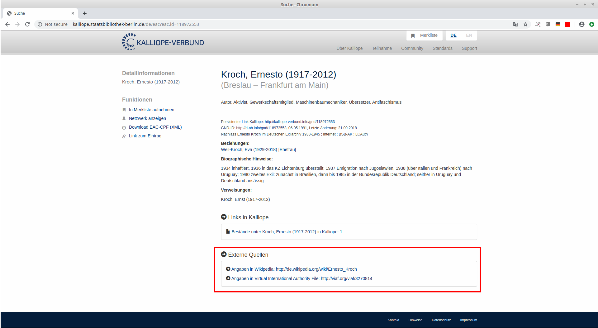
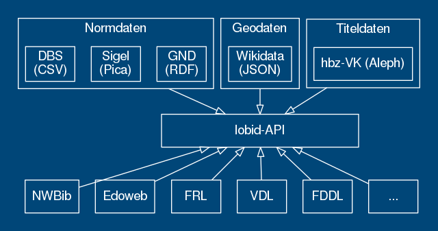

Offene Infrastruktur
Was heißt das?
Adrian Pohl /
@acka47
Offene Infrastruktur, Hochschulbibliothekszentrum NRW (hbz)
Köln, 2019-11-22
Diese Präsentation:
http://slides.lobid.org/beirat2019/

Agenda
- lobid: Nutzungsbeispiele
- Was steckt dahinter?
- Testimonials

"lobid ist der zentrale Anlaufpunkt für die Linked-Open-Data-Dienste des hbz. Das Akronym lobid steht für Linking Open Bibliographic Data. lobid umfasst intuitive Rechercheoberflächen für Anwender und webbasierte Schnittstellen für Anwendungsentwickler (Web-APIs)."
lobid – ein zentraler Knoten bibliothekarischer Dateninfrastruktur

1. lobid: Nutzungsbeispiele

Verbundbibliotheken auf hbz-Website
Basiert auf lobid-Organisationsdaten
VZG-Standortverzeichnis

Basiert auf lobid-Organisationsdaten
Edoweb und Fachrepositorium Lebenswisschenschaften (FRL)


Enge Integration der lobid-Verbunddaten und des lobid-Datenmodells
In Publisso auch GND-ID-Lookup via lobid
GND-Lookup im Fachrepositorium Lebenswissenschaften


NWBib
Webanwendung, die nahezu vollständig auf lobid-Daten basiert
Nutzt das NWBib-Subset in den lobid-Verbunddaten
Informationen zu besitzenden Bibliotheken aus lobid-Organisationsdaten
Themenvorschläge auf Basis von lobid-gnd
NWBib-Suchergebnisliste

Anfrage gegen das NWBib-Subset in lobid-resources

Informationen zu besitzenden Bibliotheken (Name, URL, Standort) werden aus lobid-organisations geladen

Bibliothekskatalog des Juristischen Seminars der ULB Bonn

Basiert auf lobid-Daten mit Bestand in DE-5-34
Virtuelle Deutsche Landesbibliographie

Seit April 2018 ist nwbib.de in die VDL integriert.

Discovery-Index der UB Dortmund
Daten zu den Beständen der UB & einiger umliegender Bibliotheken werden täglich von lobid geholt, transformiert und in den Index geladen
Biographisches Portal NRW
Literaturlisten auf Basis von lobid
Kalliope
Anzeige von externen Links (z.B. Wikipedia) aus lobid auf Personenseiten
2. Was steckt dahinter?
lobid-Dienste
lobid-resources: Daten des hbz-Verbundkatalogs
lobid-organisations: Daten des deutschsprachigen Sigelverzeichnisses und DBS-Stammdaten
lobid-gnd: Gemeinsame Normdatei
Datenquellen und -formate
a. Die Oberfläche

Demo
https://lobid.org/resourcesc. Web-API

Abfrage-Möglichkeiten
JSON-LD-Daten in Elasticsearch-Index
Elasticsearch bzw. Lucene Suchsyntax
Abfrage nach gelöschten Titeln (ab 2018-04-04)
Beispiel-Abfragen
Ermitteln eines hbz-Titels anhand der OCLC-Nummer
oclcNumber:601339369
RDA-Titel seit 2010
title:rda AND
publication.startDate:[2010 TO *]
Online-Medien mit Bestand
medium.id:
"http://rdaregistry.info/termList/ RDACarrierType/1018"
AND _exists_:hasItem
ZDB-Titel, die mit einer NWBib-Systematik erschlossen sind aber nicht der NWBib zugerechnet werden und von der ULB Bonn erstellt wurden
subject.source.id:
("http://purl.org/lobid/nwbib" OR
"http://purl.org/lobid/nwbib-spatial")
AND inCollection.id:
"http://lobid.org/resources/HT014846970#!"
AND NOT inCollection.id:
"http://lobid.org/resources/HT014176012#!"
AND describedBy.sourceOrganization.id:
"http://lobid.org/organisations/DE-5#!"
Deletions Endpoint: Vom bis 14. bis 23.2. gelöschte Titel
describedBy.deleted:[20190214 TO 2019023]
Kibana-Visualisierungen
http://kibana.lobid.org/app/kibana#/visualizeUnterschiede zu lobid-resources-API
Normdaten statt Titeldaten
Ausgangsdaten: bei lobid-gnd RDF/XML, bei lobid-organisations Pica-Plus-XML und CSV
Bereitstellung einer OpenRefine Reconciliation API, siehe z.B. http://lobid.org/gnd/api#openrefine
Reconciliation mit OpenRefine
Matchen auf GND-Ressourcen in OpenRefine
Übernahme von Daten aus spezifischen Feldern mittels Data Extension API
lobid-gnd ist der zweite Dienst nach Wikidata, der die Data Extension API unterstützt
Große Resonanz auf das Angebot, insbesondere aus den Digital Humanities


Twitter Testimonials


Fragen? Gerne jetzt oder später an
semweb@hbz-nrw.de
Weiterführende Informationen
- lobid-Blog
- lobid auf Twitter
- Pohl, Adrian / Steeg, Fabian / Christoph, Pascal (2018): lobid – Dateninfrastruktur für Bibliotheken. In: Informationspraxis 4(1). https://doi.org/10.11588/ip.2018.1.52445
- Steeg, Fabian / Pohl, Adrian / Christoph, Pascal (2019): lobid-gnd – Eine Schnittstelle zur Gemeinsamen Normdatei für Mensch und Maschine. In: Informationspraxis 5(1). https://doi.org/10.11588/ip.2019.1.52673
Linking open (bibliographic) data
Das Zentrum der im LOD-Programmbereich bereitgestellten Dienste
Dateninfrastruktur für Bibliotheken, Archive, Museen
Das hbz entwickelt seit 2009 Software im Bereich Linked Open Data (LOD)
Leitlinien
1. Publikation offen lizenzierter Daten zur freien Nutzung
2. Nutzung domänenübergreifender Web-Standards
3. Bereitstellung von Web-APIs plus Rechercheoberflächen
Datenherkunft & -generierung
Tägl. Bezug der XML-Daten über den Aleph-Publishing-Mechanismus
Konversion nach N-Triples mittels mit Metafacture (Morph)
Dabei finden verschiedene Normalisierungsarbeiten statt
Labels für verlinkte Ressourcen ergänzen
Et voilà: Linked Open Usable Data (LOUD) -> siehe Rob Sanderson's Europeanatech 2018 Keynote (Slides, Aufzeichnung)
Verbesserung der Daten: Beispiele
MARC-Relator-Codes werden aus RAK-Nebeneintragungen generiert (Morph für Personennebeneintragungen)
Normalisierung von Jahresangaben
Mapping von Informationen aus 050, 057, 058, 334, 652a, 9--, 400/403 etc. auf eine Liste von Publikations- und Medientypen (Morph)